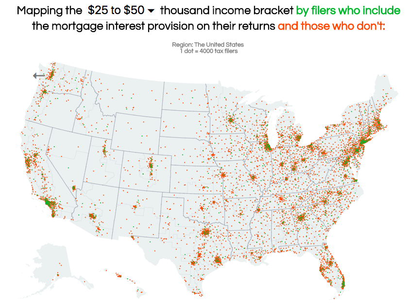

Adrian Pearl

SearchTaxData is a web app that uses IRS data to visualize the various provisions in the federal tax code, and the taxpayers around the nation that are credited or penalized by them. The creation of the app was motivated by the Tax Cuts and Jobs Act (TCJA), which was passed by congress and signed into law by President Trump in December 2017. TCJA adjusts, alters, or eliminates many existing provisions, so the goal of SearchTaxData was to help explain the impact those changes will have by illustrating, for each provision, where its users are located and how wealthy they are. Use the web app here.